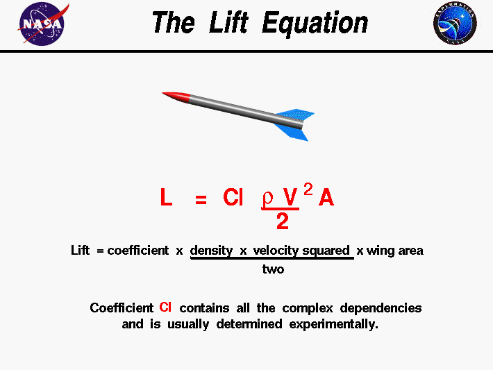
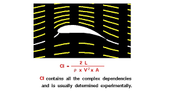
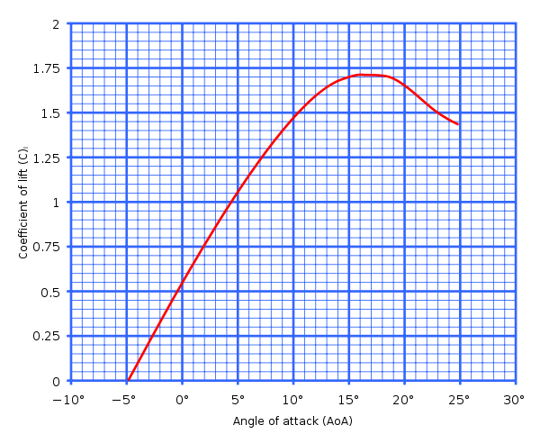
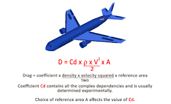
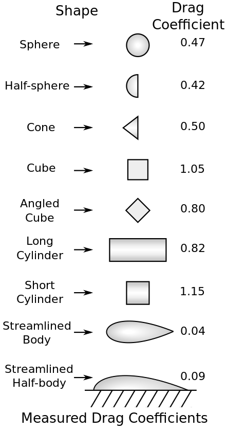

Here you can dive into my research
First thing first, I’d like to say that flights with umbrellas are very dangerous. They can cause a lot of serious injuries. It’s important to prioritize safety and use umbrella for their intended purpose, which is to provide protection from sun and rain. I’ve conducted a study in which i found out that modern umbrellas are not designed to lift human weight.
That's all? Does this mean that i gave up on this theme? Not that easy! Let’s consider that we have umbrella that can lift human’s weight. I thought of some important parameters to consider for a save flight:
Aerodynamics:
The umbrella would need to be designed with aerodynamic principles in mind to generate lift and minimize drag. Its shape, size, and surface area would all play a significant role.Structural Integrity:
The umbrella must be structurally sound to support the weight of a person during takeoff, flight, and landing. Reinforced materials, such as lightweight metals or advanced composites, might be necessary.Control Mechanisms:
You would need some form of control mechanism to steer and stabilize your flight. This could be achieved through handles, straps, or other mechanisms attached to the umbrella.Safety Equipment:
In case of emergencies or unexpected events, safety equipment such as a parachute or emergency landing system would be essential.Weather Conditions:
Flight with an umbrella would be affected by weather conditions such as wind speed, direction, and turbulence. You would need to consider these factors to ensure a safe flight.Training and Experience:
Even in this imaginary scenario, proper training and experience would be crucial for safe operation. Flying with an umbrella would require skills in piloting, navigation, and emergency procedures. Out of this parameters aerodynamics, structure integrity, control mechanism, safety equipment are and should be considered during building an umbrella. During the flight it’s constants. Training experience is very important too, but it’s can’t be included in the calculation. Let’s dive into the formulas and calculations. During the flight on the airplane acts 4 forces. It’s drag, thrust, lift and weight. But during the flight on the umbrella acts only 3 forces(because there’s no thrust force). Lift force is the force that holds an object in the air. Drag force is a mechanical force generated by a solid object moving through a fluid. Weight force is a force of weight. I took this picture from: https://www1.grc.nasa.gov/beginners-guide-to-aeronautics/lift-equation-2/#lift
Here you can see the formula of the light drag. I took this picture from the Nasa site. In our case A is not wing area, it’s area of the umbrella.
I took this picture from: https://www1.grc.nasa.gov/beginners-guide-to-aeronautics/drag-equation/
Here you can see the formula of the drag force. I took the picture from the Nasa site. In our case the reference area is the area of the umbrella.
Net force is the resulting force. For sustained flight. the net force must be greater than zero to overcome gravity and maintain altitude. Net force = lift force - drag force — weight force. Please note that this formula will be highly idealized and may not accurately represent the complexities of real-world flight dynamics.
Let’s denote the following variables:
- Vw: Wind speed (m/s)
- m: Your weight (kg)
- A: Area of the umbrella (m²)
- Cl: Coefficient of lift (dimensionless)
- Cd: Coefficient of drag (dimensionless)
- g: Acceleration due to gravity (9.81 m/s²)
The coefficient of lift (Cl) is a dimensionless quantity that represents the lift generated by an aerodynamic surface (such as an umbrella) relative to certain parameters such as angle of attack, airspeed, and shape of the surface. Usually it calculates experimentaly. But we have an imaginary situation and i don’t have enough resources.
I took this picture from: https://www1.grc.nasa.gov/beginners-guide-to-aeronautics/lift-coefficient/
I took this picture from:https://en.wikipedia.org/wiki/Lift_coefficient
Here you can see a typical curve showing section lift coefficient versus angle of attack for a cambered airfoil. Let’s consider that the algle of atck equals 0. That means that the coefficient approximately equals to 0.5. The drag coefficient (Cd) is a dimensionless quantity that represents the drag force experienced by an object moving through a fluid (such as air or water). It’s a measure of how aerodynamically streamlined or “slippery” an object is.
 I took this picture from: https://en.wikipedia.org/wiki/Drag_coefficient
Table of drag coefficients in increasing order, of 2D shapes between walls (right column) and 3D shapes (left column) at Reynolds numbers between 10⁴ and 10⁶ with flow from the left. In our case it aproximately equals to 1.4. The air density, denoted by the symbol ρ, can vary depending on factors such as altitude, temperature, and humidity. At sea level and under standard atmospheric conditions (often referred to as standard temperature and pressure, or STP), the air density is approximately 1.225 kg/m³. We’ve figured out coefficients of lift and drag. The wind speed, weight and the area of the umbrella are the variables that user should write down.